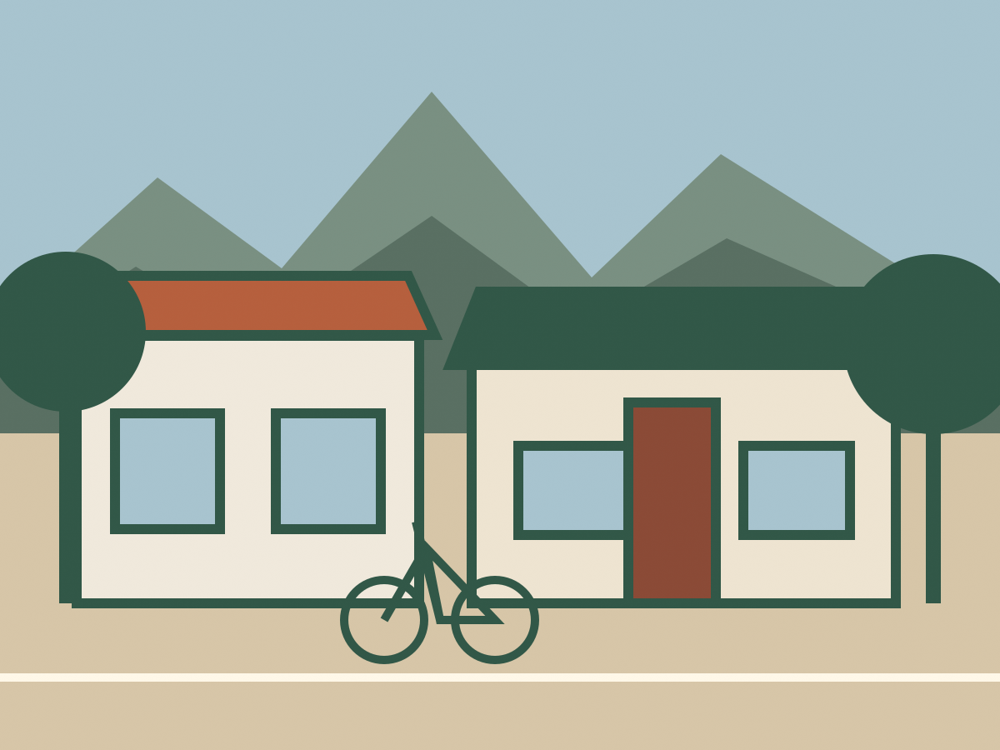
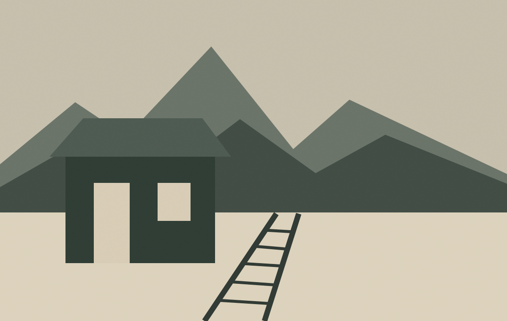

Field note No. 01
A place best understood on foot
Begin around the historic district, follow the paths outward, and notice where Niwot’s rural edges still shape daily life.
Find Niwot trails on Boulder County’s site ↗40.10° N · 105.17° W · Boulder County
An independent guide to the places, people, resources and civic decisions shaping the Niwot community.
Niwot incorporation election information →Front Range field illustration
Discover Niwot
Niwot sits where working landscapes, neighborhood streets and the Front Range meet. Its historic center, local gathering places and nearby open space reward a slower look.

Field note No. 01
Begin around the historic district, follow the paths outward, and notice where Niwot’s rural edges still shape daily life.
Find Niwot trails on Boulder County’s site ↗The community bulletin
A clear place for timely gatherings, public notices and community updates—without filling the calendar with unverified listings.
Community events
For current dates and organizer details, visit the community calendar maintained by the Niwot Business Association.
Open the current calendar ↗Living in Niwot
Start with the organization responsible for the information you need.
Local places
Independent shops, studios, food and services make Niwot’s compact commercial areas part of community life.
Browse the verified business directory ↗“Look locally first.”A guide to places, not a paid ranking
Civic life · Election 2026
Niwot voters are scheduled to consider incorporation on November 3, 2026. This independent guide separates official election information, source documents and community perspectives.
Important: Official ballot language and election administration information are provided by the court-appointed Niwot Election Commission.
Official sourceElection administration and ballot information
Community perspectivesIncorporation proponent ↗ · Incorporation opponent ↗
This guideIndependent, nonofficial context and links

Niwot’s story
Niwot’s story is carried in its historic district, agricultural roots, rail-era growth and the people who continue to shape community life. The name honors Chief Niwot, an Arapaho leader whose people lived along Colorado’s Front Range.
Read the community history ↗